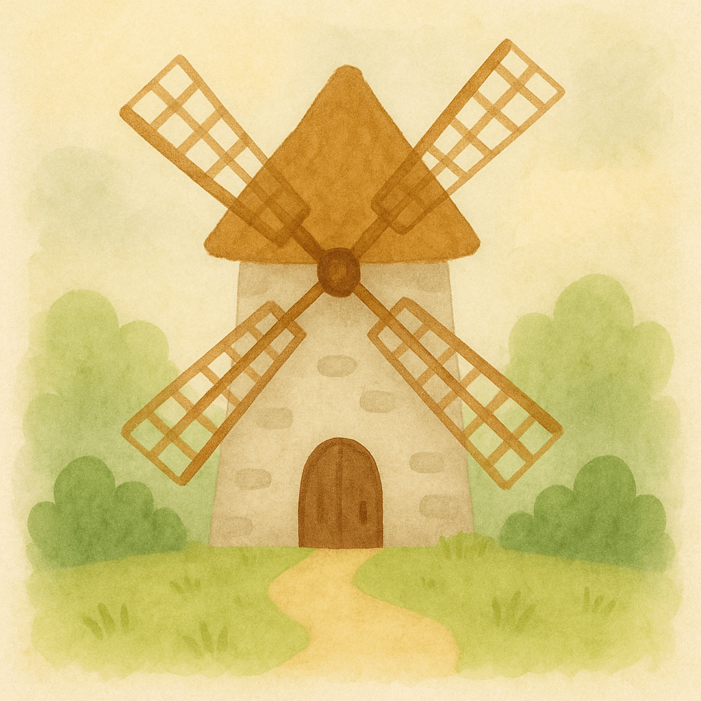
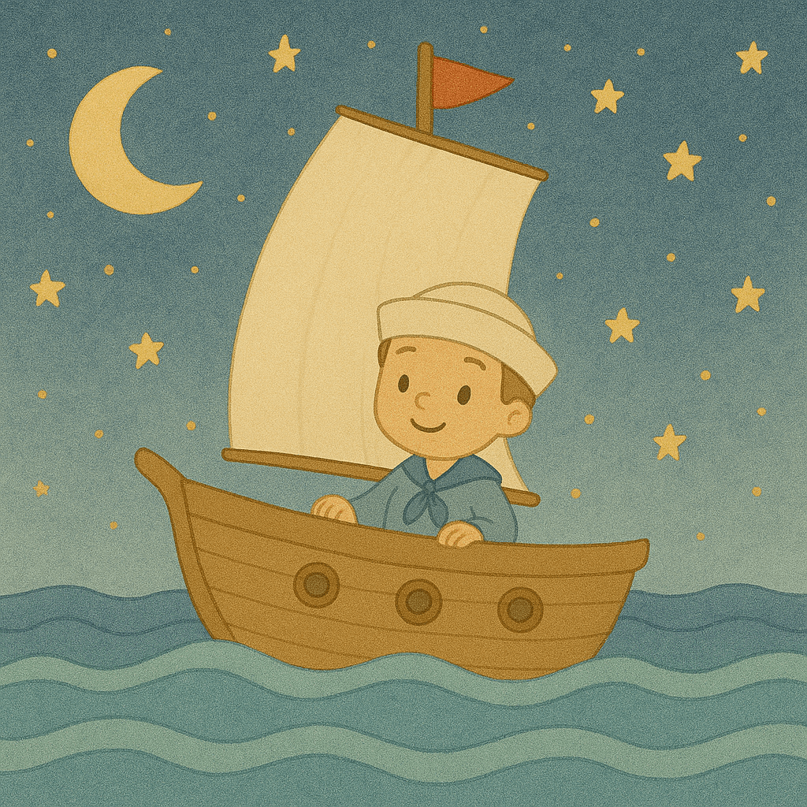
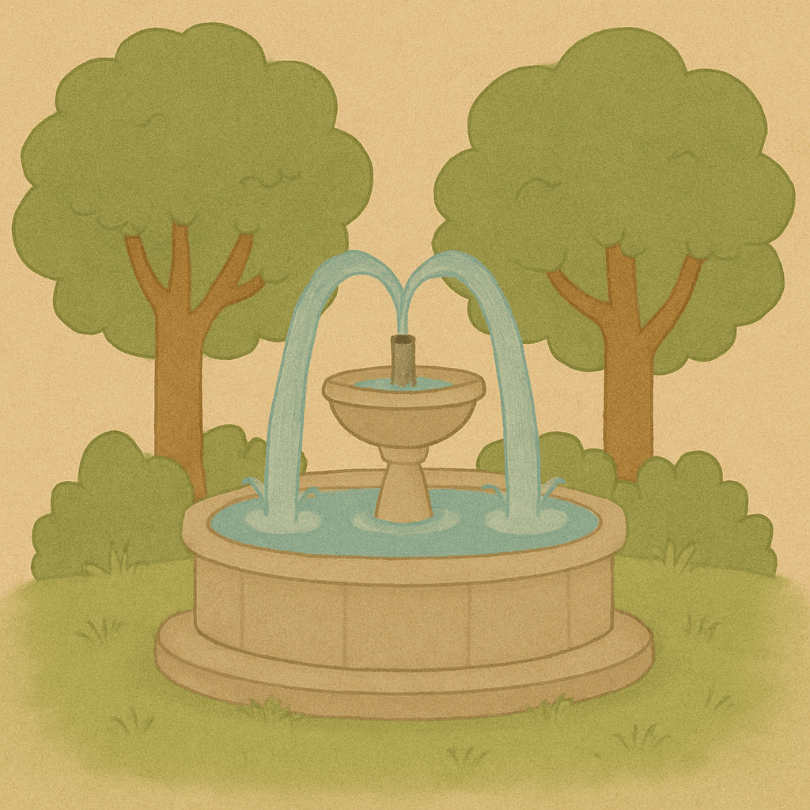
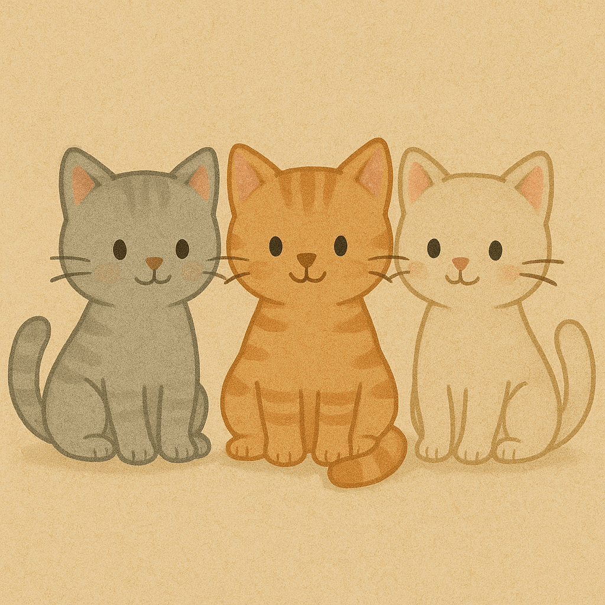
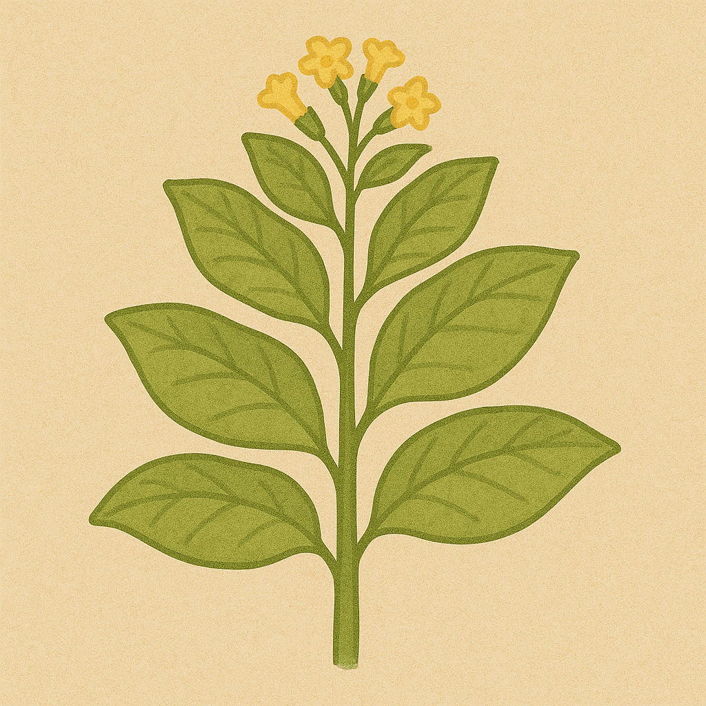
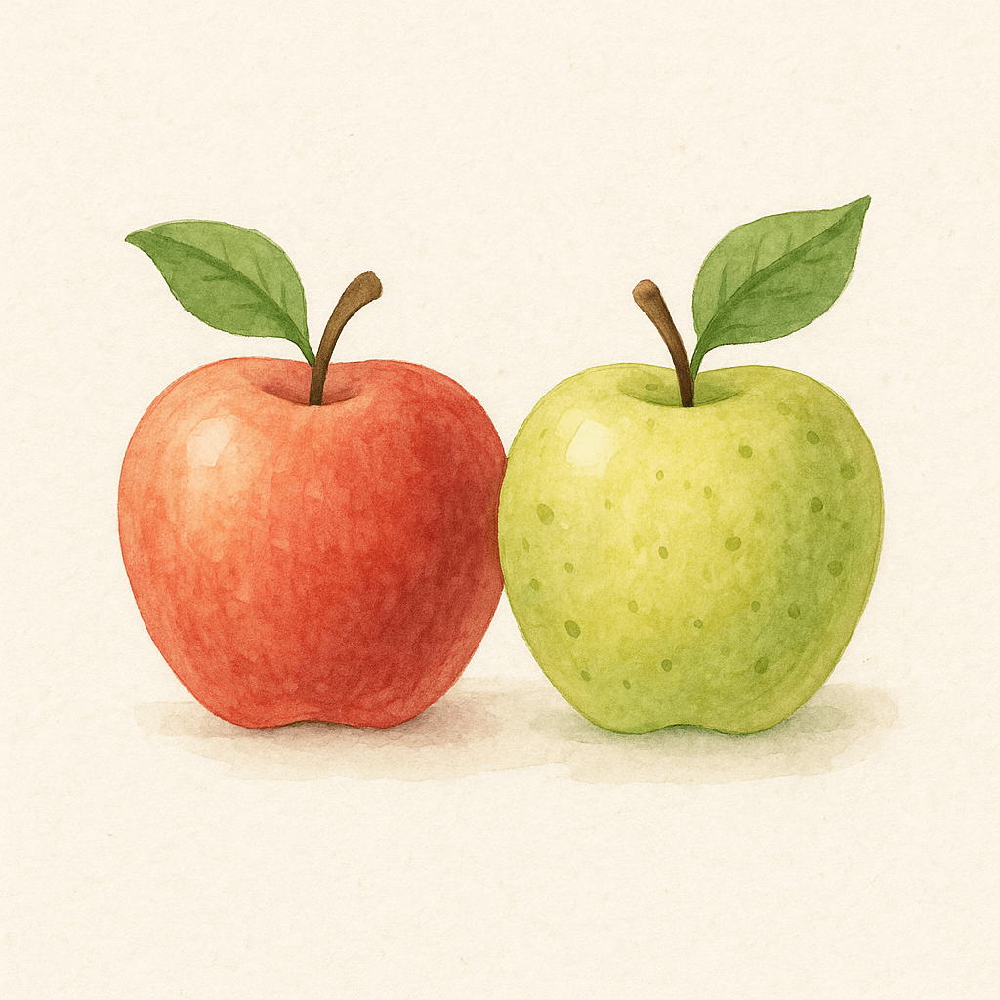
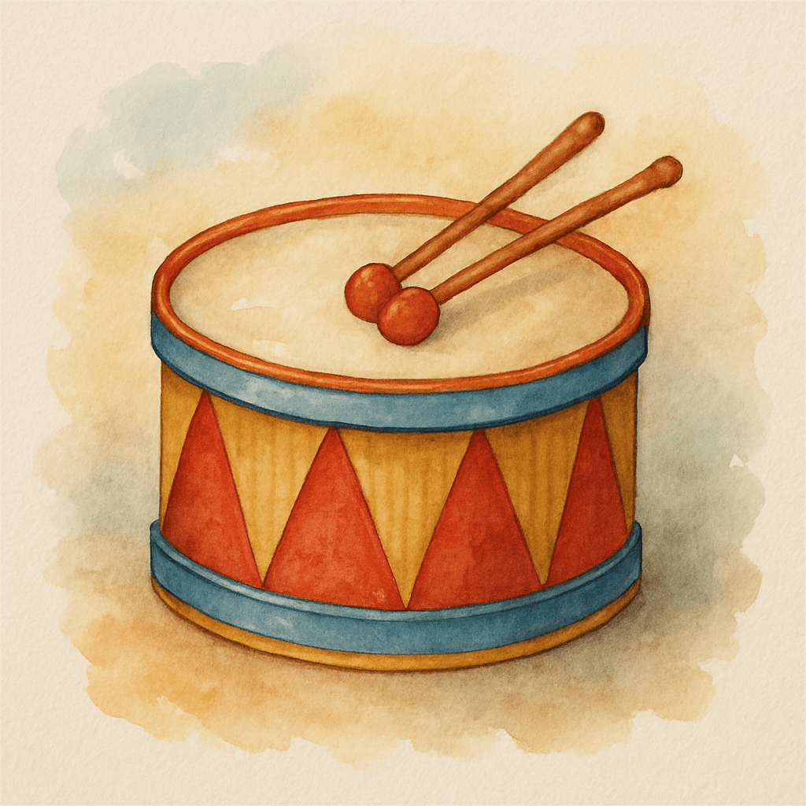
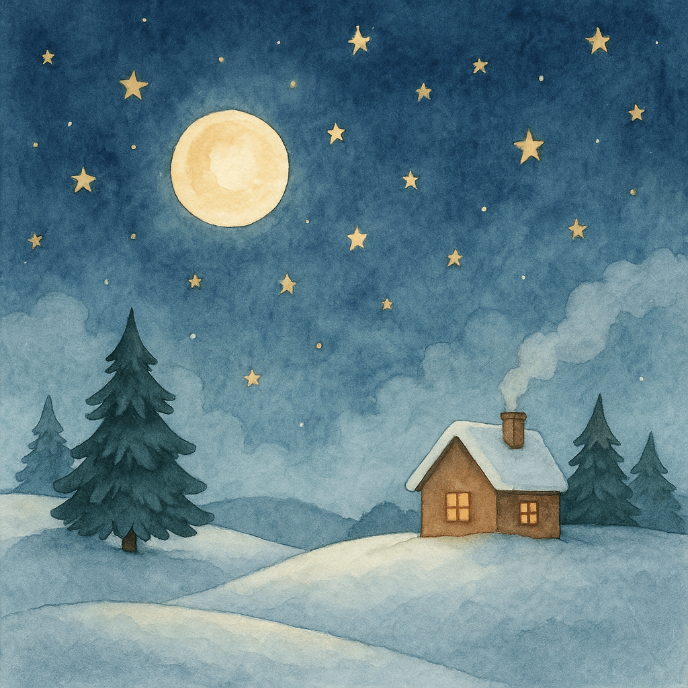
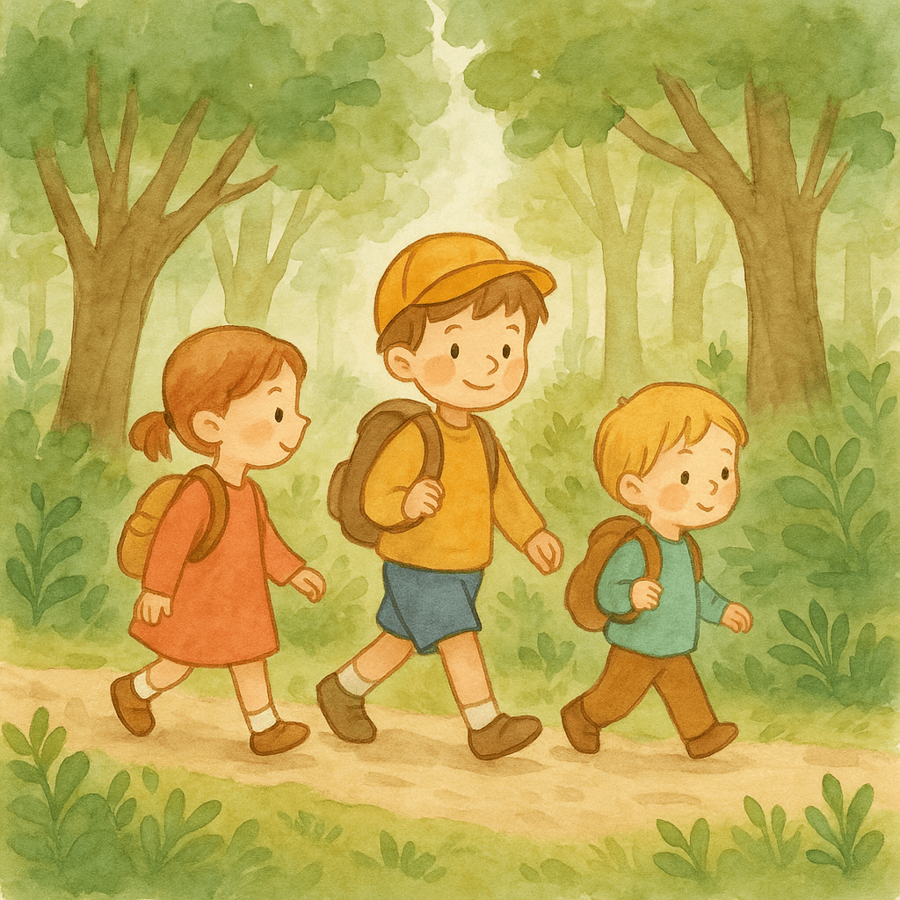
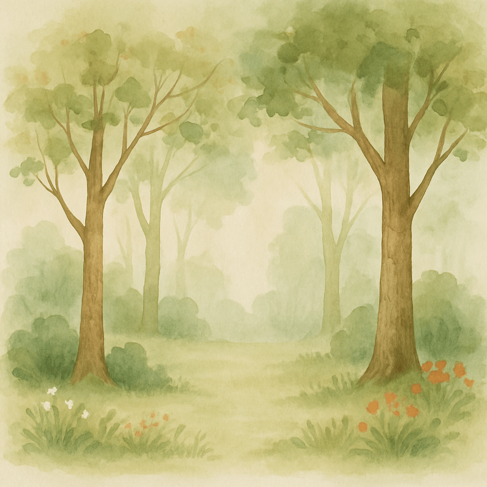

Comptines pour Arthur
Sommaire
Promenons-dans les bois Alouette, gentille alouette Une poule sur un mur Meunier, tu dors Sur le pont d’avignon Le bon Roi Dagobert Dansons la capucine Lundi matin (Le p'tit Prince a dit) Une souris verte Ainsi font font font les petites marionnettes Au clair de la lune Il était un petit navire C'est la mère Michel Vive le vent d’hiver À la claire fontaine 1 kilomètre à pied Trois petits chats Frère Jacques Coucou hibou Fais dodo, Colas mon p'tit frère J’ai du bon tabac Savez-vous planter des choux Un éléphant qui se balançait La famille tortue Pirouette, cacahouète Il était une fermière Ah les crocodiles Les petits poissons dans l’eau Dodo, l'enfant do Am stram gram Pomme de reinette et pomme d'api Tourne, tourne, petit moulin Il court, il court, le furet Joli tambour J'ai perdu le do de ma clarinette À la pêche aux moules Au feu les pompiers Mon beau sapin Il était une bergère qui gardait ses moutons Douce nuit, sainte nuit En passant par la Lorraine Maman les petits bateaux Cadet Rousselle Malbrough s'en va-t-en guerre J'aime la galette 1, 2, 3, allons dans les bois Gentil Coquelicot Nous n'irons plus au bois Bateau, ciseau, la rivière Une puce, un pou
Promenons-dans les bois
VIDEO
Promenons-nous dans les bois
Pendant que le loup n'y est pas
Si le loup y était
Il nous mangerait
Mais comme il n'y est pas
Il nous mangera pas
Loup y es-tu?
Que fais-tu?
Entends-tu?
Je mets ma chemise
Je mets ma culotte
Je mets mes chaussettes
Je mets ma veste
Je mets mes bottes
Je mets mon chapeau
Je mets mes lunettes
Je prends mon fusil
J'arrive
Vite, vite sauvons-nous
Sauvons-nous, vite, vite
Alouette, gentille alouette
VIDEO
Alouette, gentille alouette
Alouette, je te plumerai
Je te plumerai la tête
Je te plumerai la tête
Et la tête, et la tête
Alouette, Alouette
Oh, oh, oh, oh
Alouette, gentille alouette
Alouette, je te plumerai
Je te plumerai le bec
Je te plumerai le bec
Et le bec, et le bec
Et la tête, et la tête
Alouette, Alouette
Oh, oh, oh, oh
…
Et la queue, et la queue
Et les pattes, et les pattes
Et le dos, et le dos
Et les ailes, et les ailes
Et le cou, et le cou
Et le bec, et le bec
Et la tête, et la tête
Alouette, Alouette
Oh, oh, oh, oh, oh
Une poule sur un mur
VIDEO
Une poule sur un mur
Qui picore du pain dur
Picoti, Picota
Lève la queue
et puis s’en va.
Meunier, tu dors

VIDEO
Meunier tu dors, ton moulin, ton moulin va trop vite
Meunier tu dors, ton moulin, ton moulin va trop fort
Ton moulin, ton moulin va trop vite
Ton moulin, ton moulin va trop fort
Ton moulin, ton moulin va trop vite
Ton moulin, ton moulin va trop fort
Meunier tu dors, et le vent souffle souffle
Meunier tu dors, et le vent souffle fort
Les nuages, les nuages viennent vite,
Et l'orage et l'orage gronde fort !
Les nuages, les nuages viennent vite,
Et l'orage et l'orage gronde fort !
Le vent du Nord a déchiré la toile
Meunier, tu dors, ton moulin est bien mort
Sur le pont d’avignon
VIDEO
Sur le pont d’Avignon,
L’on y danse, l’on y danse,
Sur le pont d’Avignon
L’on y danse tout en rond.
Les belles dames font comme ça
Et puis encore comme ça.
Sur le pont d’Avignon
L’on y danse tout en rond.
Sur le pont d’Avignon,
L’on y danse, l’on y danse,
Sur le pont d’Avignon
L’on y danse tout en rond.
Les messieurs font comme ça
Et puis encore comme ça.
Sur le pont d’Avignon,
L’on y danse, l’on y danse,
Sur le pont d’Avignon
L’on y danse tout en rond.
…
Les jardiniers font comm’ ça
Les couturiers font comm’ ça
Les vignerons font comm’ ça
Les blanchisseuses font comm’ ça
Les officiers font comme ça
Les bébés font comme ça
Les musiciens font comme ça
Et les abbés font comme ça
Et les gamins font comme ça
Les laveuses font comme ça
Le bon Roi Dagobert
VIDEO
Le bon roi Dagobert
A mis sa culotte à l’envers ;
Le grand saint Éloi
Lui dit : Ô mon roi !
Votre Majesté
Est mal culottée.
C’est vrai, lui dit le roi,
Je vais la remettre à l’endroit.
Le bon roi Dagobert
Fut mettre son bel habit vert ;
Le grand saint Éloi
Lui dit : Ô mon roi !
Votre habit paré
Au coude est percé.
C’est vrai, lui dit le roi,
Le tien est bon, prête-le moi.
Le bon roi Dagobert
Chassait dans la plaine d’Anvers ;
Le grand saint Éloi
Lui dit : Ô mon roi !
Votre Majesté
Est bien essoufflée.
C’est vrai, lui dit le roi,
Un lapin courait après moi.
Le bon roi Dagobert
Avait un grand sabre de fer ;
Le grand saint Éloi
Lui dit : Ô mon roi !
Votre Majesté
Pourrait se blesser.
C’est vrai, lui dit le roi,
Qu’on me donne un sabre de bois.
Le bon roi Dagobert
Se battait à tort, à travers ;
Le grand saint Éloi
Lui dit : Ô mon roi !
Votre Majesté
Se fera tuer.
C’est vrai, lui dit le roi,
Mets-toi bien vite devant moi.
Le bon roi Dagobert
Voulait conquérir l’univers ;
Le grand saint Éloi
Lui dit : Ô mon roi !
Voyager si loin
Donne du tintouin.
C’est vrai, lui dit le roi,
Il vaudrait mieux rester chez soi.
Le bon roi Dagobert
Voulait s’embarquer pour la mer ;
Le grand saint Éloi
Lui dit : Ô mon roi !
Votre Majesté
Se fera noyer.
C’est vrai, lui dit le roi,
On pourra crier : « Le Roi boit ! ».
Le bon roi Dagobert
Mangeait en glouton du dessert ;
Le grand saint Éloi
Lui dit : Ô mon roi !
Vous êtes gourmand,
Ne mangez pas tant.
Bah, bah, lui dit le roi,
Je ne le suis pas tant que toi.
Quand Dagobert mourut,
Le diable aussitôt accourut ;
Le grand saint Éloi
Lui dit : Ô mon roi !
Satan va passer,
Faut vous confesser.
Hélas, lui dit le roi,
Ne pourrais-tu mourir pour moi ?
Dansons la capucine
VIDEO
Dansons la capucine
Y a pas de pain chez nous
Y en a chez la voisine
Mais ce n'est pas pour nous
Youh!
Dansons la capucine
Y'a pas de vin chez nous
Y'en a chez la voisine
Mais ce n'est pas pour nous
Youh!
Dansons la capucine
Y'a pas de feu chez nous
Y'en a chez la voisine
Mais ce n'est pas pour nous
Youh!
Dansons la capucine
Y'a du plaisir chez nous
On pleur' chez la voisine
On rit toujours chez nous
Youh!
Lundi matin (Le p'tit Prince a dit)
VIDEO
Lundi matin
L'emp'reur, sa femme
et le p'tit prince
sont venus chez moi
pour me serrer la pince.
Comm' j'étais parti
le p'tit prince a dit :
« Puisque c'est ainsi nous reviendrons mardi. »
Mardi matin
L'emp'reur, sa femme
et le p'tit prince
sont venus chez moi
pour me serrer la pince.
Comm' j'étais parti
le p'tit prince a dit :
« Puisque c'est ainsi nous reviendrons mercredi. »
Une souris verte
VIDEO
Une souris verte qui courait dans l'herbe
Je l'attrape par la queue, je la montre à ces messieurs
Ces messiers me disent "trempez-la dans l'huile"
"Trempez-la dans l'eau, ça fera un escargot"
Tout chaud
Je la mets dans mon chapeau,
elle me dit qu'il fait trop chaud
Je la mets dans mon tiroir,
elle me dit qu'il fait trop noir
Je la mets dans ma culotte (culotte, culotte)
Elle me fait trois petites crottes
Ainsi font font font les petites marionnettes
VIDEO
Ainsi font, font, font, les petites marionnettes
Ainsi font, font, font, trois petits tours et puis s'en vont
Les mains aux côtés, sautez, sautez, marionnettes
Les mains aux côtés, marionnettes recommencez
Ainsi font, font, font, les petites marionnettes
Ainsi font, font, font, trois petits tours et puis s'en vont
Wafou et Tounis, sautez, sautez, marionnettes
Panda et Timi, ils sont trop mignons ainsi
Ainsi font, font, font, les petites marionnettes
Ainsi font, font, font, trois petits tours et puis s'en vont
Les hannetons seront les petites marionnettes
Et elles danseront quand les enfants dormiront
Au clair de la lune
VIDEO
Au clair de la Lune
Mon ami Pierrot
Prête-moi ta plume
Pour écrire un mot
Ma chandelle est morte
Je n'ai plus de feu
Ouvre-moi ta porte
Pour l'amour de Dieu
Au clair de la Lune
Pierrot répondit
Je n'ai pas de plume
Je suis dans mon lit
Va chez la voisine
Je crois qu'elle y est
Car dans sa cuisine
On bat le briquet
Au clair de la Lune
On n'y voit qu'un peu
On cherche la plume
On cherche le feu
En cherchant d'la sorte
Je n'sais c'qu'on trouvera
Mais je sais qu'la porte
Sur eux se ferma
Il était un petit navire

VIDEO
Il était un petit navire
Il était un petit navire
Qui n'avait ja- ja- jamais navigué
Qui n'avait ja- ja- jamais navigué
Ohé ! Ohé !
Ohé ! Ohé ! matelot, matelot navigue sur les flots
Ohé ! Ohé ! matelot, matelot navigue sur les flots
Il partit pour un long voyage (bis)
Sur la mer Mé- Mé- Méditerranée (bis)
Ohé ! Ohé !
(refrain)
Au bout de cinq à six semaines (bis)
Les vivres vin- vin- vinrent à manquer (bis)
Ohé ! Ohé !
(refrain)
On tira à la courte paille (bis)
Pour savoir qui, qui, qui serait mangé (bis)
Ohé ! Ohé !
(refrain)
Le sort tomba sur le plus jeune (bis)
Le mousse qui, qui, qui s'mit à pleurer (bis)
Ohé ! Ohé !
(refrain)
On cherche alors à quelle sauce (bis)
Le pauvre enfant, -fant, -fant sera mangé (bis)
Ohé ! Ohé !
(refrain)
L'un voulait qu'on le mît à frire (bis)
L'autre voulait, -lait, -lait le fricasser (bis)
Ohé ! Ohé !
(refrain)
Pendant qu'ainsi l'on délibère (bis)
Il monte en haut, haut, haut du grand hunier (bis)
Ohé ! Ohé !
(refrain)
Il fait au ciel une prière (bis)
Interrogeant, -geant, -geant l'immensité (bis)
Ohé ! Ohé !
(refrain)
Mais regardant la mer entière (bis)
Il vit des flots, flots, flots de tous côtés (bis)
Ohé ! Ohé !
(refrain)
Ô Sainte Vierge, ô ma patronne (bis)
Cria le pau- pau- pauvre infortuné (bis)
Ohé ! Ohé !
(refrain)
Si j'ai péché, vite pardonne (bis)
Je ne veux pas, pas, pas être mangé (bis)
Ohé ! Ohé !
(refrain)
Au même instant un grand miracle (bis)
Pour l'enfant fut, fut, fut réalisé (bis)
Ohé ! Ohé !
(refrain)
Des p'tits poissons, dans le navire (bis)
Sautèrent par, par, par plusieurs milliers (bis)
Ohé ! Ohé !
(refrain)
On les prit, on les mit à frire (bis)
Le jeune mou- mou- mousse fut sauvé (bis)
Ohé ! Ohé !
(refrain)
Si cette histoire vous amuse (bis)
Nous allons la, la, la recommencer (bis)
Ohé ! Ohé !
C'est la mère Michel
VIDEO
C'est la mère Michel qui a perdu son chat,
Qui crie par la fenêtre à qui le lui rendra.
C'est le père Lustucru,
Qui lui a répondu :
Allez la mère Michel vot' chat n'est pas perdu
Sur l'air du tra la la la
Sur l'air du tra la la la
Sur l'air du tra déridéra et tra la la
C'est la mère Michel qui lui a demandé :
Mon chat n'est pas perdu, vous l'avez donc trouvé ?
C'est le père Lustucru,
Qui lui a répondu :
Donnez une récompense, il vous sera rendu.
(Refrain)
Et la mère Michel lui dit : c'est décidé,
Si vous m'rendez mon chat vous aurez un baiser !
Et le père Lustucru,
Qui n'en a pas voulu,
Dit à la mère Michel : vot' chat il est vendu[3].
(Refrain)
Vive le vent d’hiver
VIDEO
Vive le vent, vive le vent, vive le vent d’hiver
Qui s’en va sifflant, soufflant dans les grands sapins verts
Oh ! Vive le temps, vive le temps, vive le temps d’hiver
Boule de neige et jour de l’an et bonne année grand-mère
Sur le long chemin tout blanc de neige blanche
Un vieux monsieur s’avance avec sa canne dans la main
Et tout là -haut le vent qui siffle dans les branches
Lui souffle la romance qu’il chantait petit enfant :
Vive le vent, vive le vent, vive le vent d’hiver
Qui s’en va sifflant, soufflant dans les grands sapins verts
Oh ! Vive le temps, vive le temps, vive le temps d’hiver
Boule de neige et jour de l’an et bonne année grand-mère
Et le vieux monsieur descend vers le village,
C’est l’heure où tout est sage et on danse au coin du feu
Et dans chaque maison il joue un air de fête
Partout la table est prête et on entend la même chanson
Vive le vent, vive le vent, vive le vent d’hiver
Qui s’en va sifflant, soufflant dans les grands sapins verts
Oh ! Vive le temps, vive le temps, vive le temps d’hiver
Boule de neige et jour de l’an et bonne année grand-mère
Joyeux, joyeux Noël aux mille bougies
Quand chantent dans le ciel les cloches de la nuit,
OH ! Vive le vent, vive le vent, vive le vent d’hiver
Qui s’en va sifflant soufflant dans les grands sapins verts
Vive le vent, vive le vent, vive le vent d’hiver
Boule de neige et jour de l’an et bonne année grand-mère
Joyeux, joyeux Noël aux milles bougies
Quand chantent dans le ciel les cloches de la nuit
Vive le vent, vive le vent, vive le vent d’hiver
Qui s’en va sifflant, soufflant dans les grands sapins verts
Oh ! Vive le temps, vive le temps, vive le temps d’hiver
Boule de neige et jour de l’an et bonne année grand-mère
À la claire fontaine

VIDEO
À la claire fontaine
M'en allant promener
J'ai trouvé l'eau si belle
Que je m'y suis baignée
Il y a longtemps que je t'aime jamais je ne t'oublierai
Sous les feuilles d'un chêne
Je me suis fait sécher
Sur la plus haute branche
Un rossignol chantait
Il y a longtemps que je t'aime jamais je ne t'oublierai
Chante, rossignol, chante
Toi qui as le cœur gai
Tu as le cœur à rire
Moi, je l'ai à pleurer
Il y a longtemps que je t'aime jamais je ne t'oublierai
J'ai perdu mon ami
Sans l'avoir mérité
Pour un bouton de rose
Que j'ai trop tôt donné
Il y a longtemps que je t'aime jamais je ne t'oublierai
Je voudrais que la rose
Fût encore au rosier
Et que mon ami Pierre
Fût encore à m'aimer
Il y a longtemps que je t'aime jamais je ne t'oublierai
1 kilomètre à pied
VIDEO
Un kilomètre à pied, ça use, ça use
Un kilomètre à pied, ça use les souliers.
Deux kilomètres à pied, ça use, ça use,
Deux kilomètres à pied, ça use les souliers.
…
Trois petits chats

VIDEO
Trois p'tits chats, trois p'tits chats, trois p'tits chats, chats, chats
Chapeau d'paille, chapeau d'paille, chapeau d'paille, paille, paille
Paillasson...
Somnambule...
Bulletin...
Tintamarre...
Marabout...
Bout de cigare...
Garde-fou...
Fou de rage...
Rage de dent...
Dentifrice...
Frisotin...
Tintifuge...
Fugitif...
Typhoïde...
Identique...
Tique nerveux...
Voeux de guerre...
Guerre de Troie...
Trois petits chats...
Chapeau d'paille...
Paillasson...
Somnambule...
Bulletin...
Tintamarre...
Marabout...
Bout de ficelle...
Selle de cheval...
Cheval de course...
Course à pied...
Pied à terre...
Terre de feu...
Feu follet...
Lait de vache...
Vache de ferme...
Ferme ta gueule...
Gueule de loup...
Loup des bois...
Boîte aux lettres...
Lettre d'amour...
Mourre à trois...
Trois p'tits chiens...
Chien de garde...
Garde à vous...
Vous là -bas...
Basse-cour...
Courtisane...
Zanzibar...
Barre à clou...
Clou de girofle...
Rofle Me le..
Frère Jacques
VIDEO
Frère Jacques,
Levez-vous !
Sonnez les matines,
Bing, Bong, Bong !
Coucou hibou
VIDEO
Dans la forêt lointaine
On entend le coucou.
Du haut de son grand chêne,
Il répond au hibou.
Coucou, coucou, coucou, hibou, coucou.
Coucou, coucou, coucou, hibou, coucou.
Fais dodo, Colas mon p'tit frère
VIDEO
Fais dodo Colas mon p'tit frère,
Fais dodo t'auras du lolo ;
Maman est en haut
qui fait du gâteau,
Papa est en bas
qui fait du chocolat .
Fais dodo Colas mon p'tit frère,
Fais dodo t'auras du lolo.
Fais dodo Colas mon p'tit frère,
Fais dodo t'auras du lolo ;
Si tu fais dodo
Maman vient bientôt
Si tu ne dors pas
Papa s’en ira
Fais dodo Colas mon p'tit frère,
Fais dodo t'auras du lolo.
J’ai du bon tabac

VIDEO
J'ai du bon tabac dans ma tabatière,
J'ai du bon tabac, tu n'en auras pas.
J'en ai du fin et du bien râpé,
Mais ce n'est pas pour ton vilain nez !
(refrain strict :)
J'ai du bon tabac dans ma tabatière,
J'ai du bon tabac, tu n'en auras pas.
Savez-vous planter des choux
VIDEO
Savez-vous planter les choux
À la mode, à la mode ?
Savez-vous planter les choux
À la mode de chez nous ?
On les plante avec le doigt
À la mode, à la mode
On les plante avec le doigt
À la mode de chez nous.
(Refrain)
On les plante avec les mains
À la mode, à la mode ?
On les plante avec les mains
À la mode de chez nous.
(Refrain)
On les plante avec le pied
À la mode, à la mode ?
On les plante avec le pied
À la mode de chez nous.
(Refrain)
On les plante avec le coude
À la mode, à la mode ?
On les plante avec le coude
À la mode de chez nous.
(Refrain)
On les plante avec le nez
À la mode, à la mode ?
On les plante avec le nez
À la mode de chez nous.
(Refrain)
On les plante avec le g’nou,
À la mode, à la mode,
On les plante avec le g’nou,
À la mode de chez nous.
(Refrain)
Un éléphant qui se balançait
VIDEO
Un éléphant qui se balançait
Sur une toile, toile, toile
Toile d'araignée
C'était un jeu tellement
Tellement amusant
Que tout à coup
Ba da boum
Deux éléphants qui se balançaient
Sur une toile, toile, toile
Toile d'araignée
C'était un jeu tellement
Tellement amusant
Que tout à coup
Ba da boum
Trois éléphants qui se balançaient
Sur une toile, toile, toile
Toile d'araignée
C'était un jeu tellement
Tellement amusant
Que tout à coup
Ba da boum
…
La famille tortue
VIDEO
Jamais on a vu
Jamais on ne verra
La famille tortue courir après les rats
Le papa tortue
Et la maman tortue
Et les enfants tortue
Iront toujours au pas
Pirouette, cacahouète
VIDEO
Il était un petit homme
Pirouette, cacahuète
Il était un petit homme
Qui avait une drôle de maison
Qui avait une drôle de maison
Sa maison est en carton
Pirouette, cacahuète
Sa maison est en carton
Les escaliers sont en papier
Les escaliers sont en papier
Si vous voulez y monter
Pirouette, cacahuète
Si vous voulez y monter
Vous vous casserez le bout du nez
Vous vous casserez le bout du nez
Le facteur y est monté
Pirouette, cacahuète
Le facteur y est monté
Il s'est cassé le bout du nez
Il s'est cassé le bout du nez
On lui a raccommodé
Pirouette, cacahuète
On lui a raccommodé
Avec du joli fil doré
Avec du joli fil doré
Le beau fil, il s'est cassé
Pirouette, cacahuète
Le beau fil, il s'est cassé
Le bout du nez s'est envolé
Le bout du nez s'est envolé
Un avion à réaction
Pirouette, cacahuète
Un avion à réaction
A rattrapé le bout du nez
A rattrapé le bout du nez
Mon histoire est terminée
Pirouette, cacahuète
Mon histoire est terminée
Messieurs, Mesdames, applaudissez
Messieurs, Mesdames, applaudissez
Il était une fermière
VIDEO
Il était une fermière
Qui allait au marché
Elle portait sur sa tête
Trois pommes dans un panier
Les pommes faisaient
Rouli, roula
Les pommes faisaient
Rouli, roula…. Stop !
Trois pas en avant,
Trois pas en arrière,
Trois pas sur le côté,
Trois pas de l’autre côté !
Ah les crocodiles
VIDEO
Un crocodile, s'en allant en guerre,
Disait au r'voir à ses petits enfants.
Traînant ses pieds dans la poussière,
Il s'en allait combattr' les éléphants.
REFRAIN (bis)
Ah ! Les cro, cro, cro (bis)
les crocodiles
Sur les bords du Nil, ils sont partis,
N'en parlons plus.
Il fredonnait une march' militaire,
Dont il mâchait les mots à grosses dents.
Quand il ouvrait la gueule tout entière,
On croyait voir ses ennemis dedans.
REFRAIN
Il agitait sa grande queue à l'arrière,
Comme s'il était d'avance triomphant.
Les animaux devant sa mine altière,
Dans les forêts, s'enfuyaient tout tremblants.
REFRAIN
Un éléphant parut : et sur la terre,
Se prépara ce combat de géants.
Mais près de là courait une rivière,
Le crocodile s'y jeta subitement.
REFRAIN
Et tout rempli d'une crainte salutaire,
S'en retourna vers ses petits enfants.
Notre éléphant, d'une trompe plus fière,
Voulut alors accompagner ce chant.
REFRAIN
Les petits poissons dans l’eau
VIDEO
Les petits poissons dans l'eau
Nagent, nagent, nagent, nagent, nagent
Les petits poissons dans l'eau
Nagent aussi bien que les gros
Les petits, les gros
Nagent comme il faut
Les gros, les petits
Nagent bien aussi
Dodo, l'enfant do
VIDEO
Dodo, l'enfant do
L'enfant dormira bien vite
Dodo, l'enfant do
L'enfant dormira bientôt.
Am stram gram
VIDEO
Am, stram, gram,
Pic et pic et colégram,
Bour et bour et ratatam,
Am, stram, gram.
Pomme de reinette et pomme d'api

VIDEO
Pomme de reinette et pomme d'api
Tapis tapis rouge
Pomme de reinette et pomme d'api
Tapis tapis gris
Pomme de reinette et pomme d'api
Tapis tapis rouge
Pomme de reinette et pomme d'api
Tapis tapis gris
Tourne, tourne, petit moulin
VIDEO
Tourne, tourne, petit moulin
Frappent, frappent, petites mains
Vole, vole, petit oiseau
Nage, nage, poisson dans l'eau
Petit moulin a bien tourné
Petites mains ont bien frappé
Petit oiseau a bien volé
Petit poisson a bien nagé
Il court, il court, le furet
VIDEO
Il court, il court, le furet,
Le furet du bois, Mesdames,
Il court, il court, le furet,
Le furet du bois joli.
Il est passé par ici, (bis)
Il repassera par là . (bis)
Il court, il court, le furet,
Le furet du bois, Mesdames,
Il court, il court, le furet,
Le furet du bois joli.
Joli tambour

VIDEO
Joli tambour s'en revient de la guerre
Joli tambour s'en revient de la guerre
Et ri et ran, ran, ran pa ta plan !
S'en revient de la guerre
La fille du roi s'est mise à sa fenêtre
Dans sa main droite, elle tient une rose
Et ri et ran, ran, ran pa ta plan !
Elle tient une rose.
Fille du roi, veux-tu m'donner ta rose ?
Fille du roi, veux-tu m'donner ta rose ?
Et ri et ran, ran, ran pa ta plan !
Veux-tu m'donner ta rose ?
Joli tambour, demande-la z'à mon père
Joli tambour, demande-la z'à mon père
Et ri et ran, ran, ran pa ta plan !
Demande-la z'à mon père
Sire mon Roi, veux-tu me donner ta fille ?
Joli tambour, quelle est donc ta fortune ?
Et ri et ran, ran, ran pa ta plan !
Quelle est donc ta fortune ?
Sire mon Roi, ma caisse et mes baguettes
Sire mon Roi, ma caisse et mes baguettes
Et ri et ran, ran, ran pa ta plan !
Ma caisse et mes baguettes
Joli tambour, tu n'es pas assez riche
Joli tambour, tu n'es pas assez riche
Et ri et ran, ran, ran pa ta plan !
Tu n'es pas assez riche
J'ai bien aussi des châteaux par douzaines
J'ai trois vaisseaux dessus la mer jolie
Et ri et ran, ran, ran pa ta plan !
Dessus la mer jolie
L'un est en or, l'autre en argenterie
Le troisième, c'est pour embarquer ma mie
Et ri et ran, ran, ran pa ta plan !
Pour embarquer ma mie
Joli tambour, dis-moi quel est ton père
Joli tambour, dis-moi quel est ton père
Et ri et ran, ran, ran pa ta plan !
Dis-moi quel est ton père
Sire mon roi, c'est l'empereur Auguste
Joli tambour, je te donne ma fille
Et ri et ran, ran, ran pa ta plan !
Je te donne ma fille
Sire mon roi, je fais fi d'toi et d'ta fille
Dans mon pays, y'en a de plus jolies
Et ri et ran, ran, ran pa ta plan !
Y'en a de plus jolies
J'ai perdu le do de ma clarinette
VIDEO
J'ai perdu le do de ma clarinette (bis)
Ah si papa il savait ça tra la la (bis)
Il dirait Ohé ! (bis)
Tu n'connais pas la cadence
Tu n'sais pas comment l'on danse
Tu ne sais pas danser
Au pas cadencé
Au pas, camarade (bis)
Au pas, au pas, au pas
Au pas, camarade (bis)
Au pas, au pas, au pas
Au pas, au pas
J'ai perdu le ré de ma clarinette (bis)
Ah si papa il savait ça tra la la (bis)
Il dirait Ohé ! (bis)
Tu n'connais pas la cadence
Tu n'sais pas comment l'on danse
Tu ne sais pas danser
Au pas cadencé
Au pas, camarade (bis)
Au pas, au pas, au pas
Au pas, camarade (bis)
Au pas, au pas, au pas
Au pas, au pas
J'ai perdu le mi de ma clarinette (bis)
Ah si papa il savait ça tra la la (bis)
Il dirait Ohé ! (bis)
Tu n'connais pas la cadence
Tu n'sais pas comment l'on danse
Tu ne sais pas danser
Au pas cadencé
Au pas, camarade (bis)
Au pas, au pas, au pas
Au pas, camarade (bis)
Au pas, au pas, au pas
Au pas, au pas
Tu n'connais pas la cadence
Tu n'sais pas comment l'on danse
Tu ne sais pas danser
Au pas cadencé
Au pas, camarade (bis)
Au pas, au pas, au pas
Au pas, camarade (bis)
Au pas, au pas, au pas
Au pas, camarade (bis)
Au pas, au pas, au pas
Au pas, camarade (bis)
Au pas, au pas, au pas
À la pêche aux moules
VIDEO
À la pêche aux moules, moules, moules
Je n'veux plus y aller maman
Les gens de la ville, ville, ville
M'ont pris mon panier maman
Les gens de la ville, ville, ville
M'ont pris mon panier maman
Quand une fois ils vous tiennent, tiennent, tiennent
Sont-ils de bons enfants
Quand une fois ils vous tiennent, tiennent, tiennent
Sont-ils de bons enfants
Ils vous font des petites caresses
Et des petits compliments
À la pêche aux moules, moules, moules
Je n'veux plus y aller maman
Les gens de la ville, ville, ville
M'ont pris mon panier maman
Les gens de la ville, ville, ville
M'ont pris mon panier maman
Quand une fois ils vous tiennent, tiennent, tiennent
Sont-ils de bons enfants
Quand une fois ils vous tiennent, tiennent, tiennent
Sont-ils de bons enfants
Ils vous font des petites caresses
Et des petits compliments
Au feu les pompiers
VIDEO
Au feu, les pompiers,
Y a la maison qui brûle !
Au feu, les pompiers,
V'là la maison brûlée !
C'est pas moi qui l'ai brûlée,
C'est la cuisinière,
C'est pas moi qui l'ai brûlée,
C'est le cuisinier.
Au feu, les pompiers,
Y a la maison qui brûle !
Au feu, les pompiers,
V'là la maison brûlée !
Mon beau sapin
VIDEO
Mon beau sapin, roi des forêts
Que j'aime ta verdure !
Quand par l'hiver, bois et guérets
Sont dépouillés de leurs attraits
Mon beau sapin, roi des forêts
Tu gardes ta parure.
Toi que Noël planta chez nous
Au saint anniversaire,
Joli sapin, comme ils sont doux
Et tes bonbons et tes joujoux
Toi que Noël planta chez nous
Tout brillant de lumière.
Mon beau sapin, tes verts sommets
Et leur fidèle ombrage
De la foi qui ne ment jamais
De la constance et de la paix.
Mon beau sapin, tes verts sommets
M'offrent la douce image.
Il était une bergère qui gardait ses moutons
VIDEO
Il était une bergère
Et ron et ron, petit patapon
Il était une bergère
Qui gardait ses moutons, ron ron
Qui gardait ses moutons
Elle fit un fromage
Et ron et ron, petit patapon
Elle fit un fromage
Du lait de ses moutons, ron ron
Du lait de ses moutons
Le chat qui la regarde,
Et ron et ron, petit patapon
Le chat qui la regarde
D'un petit air fripon, ron ron
D'un petit air fripon
Si tu y mets la patte
Et ron et ron, petit patapon
Si tu y mets la patte
Tu auras du bâton, ron ron
Tu auras du bâton
Il n'y mit pas la patte
Et ron et ron, petit patapon
Il n'y mit pas la patte
Il y mit le menton, ron ron
Il y mit le menton
La bergère en colère
Et ron et ron, petit patapon
La bergère en colère
Tua son p'tit chaton, ron ron
Tua son p'tit chaton
Elle fut à confesse
Et ron et ron, petit patapon
Elle fut à confesse
Pour demander pardon, ron ron
Pour demander pardon
Mon père je m'accuse
Et ron et ron, petit patapon
Mon père je m'accuse
D'avoir tué mon chaton, ron ron
D'avoir tué mon chaton
Ma fille pour pénitence
Et ron et ron, petit patapon
Ma fille pour pénitence
Nous nous embrasserons, ron ron
Nous nous embrasserons
La peine étant si douce
Et ron et ron, petit patapon
La peine étant si douce
Nous recommencerons, ron ron
Nous recommencerons
Douce nuit, sainte nuit

VIDEO
Douce nuit, sainte nuit !
Dans les cieux ! L'astre luit.
Le mystère annoncé s'accomplit
Cet enfant sur la paille endormi,
C'est l'amour infini !
C'est l'amour infini !
Saint enfant, doux agneau !
Qu'il est grand ! Qu'il est beau !
Entendez résonner les pipeaux
Des bergers conduisant leurs troupeaux
Vers son humble berceau !
Vers son humble berceau !
C'est vers nous qu'il accourt,
En un don sans retour !
De ce monde ignorant de l'amour,
Où commence aujourd'hui son séjour,
Qu'il soit Roi pour toujours !
Qu'il soit Roi pour toujours !
Quel accueil pour un Roi !
Point d'abri, point de toit !
Dans sa crèche il grelotte de froid
Ô pécheur, sans attendre la croix,
Jésus souffre pour toi !
Jésus souffre pour toi !
Paix à tous ! Gloire au ciel !
Gloire au sein maternel,
Qui pour nous, en ce jour de Noël,
Enfanta le Sauveur éternel,
Qu'attendait Israël !
Qu'attendait Israël !
En passant par la Lorraine
VIDEO
En passant par la Lorraine avec mes sabots (bis)
Rencontrais trois capitaines, avec mes sabots dondaine
Oh, oh, oh ! avec mes sabots
Rencontrais trois capitaines avec mes sabots (bis)
Ils m'ont appelée "Vilaine", avec mes sabots dondaine
Oh, oh, oh ! avec mes sabots
Ils m'ont appelée "Vilaine", avec mes sabots (bis)
Je ne suis pas si vilaine, avec mes sabots dondaine
Oh, oh, oh ! avec mes sabots
Je ne suis pas si vilaine, avec mes sabots (bis)
Puisque le fils du roi m'aime, avec mes sabots dondaine
Oh, oh, oh ! avec mes sabots
Puisque le fils du roi m'aime avec mes sabots (bis)
Il m'a donné pour étrenne avec mes sabots dondaine
Oh, oh, oh ! avec mes sabots
Il m'a donné pour étrenne avec mes sabots (bis)
Un bouquet de marjolaine avec mes sabots dondaine
Oh, oh, oh ! avec mes sabots
Un bouquet de marjolaine avec mes sabots (bis)
Je l'ai planté dans la plaine avec mes sabots dondaine
Oh, oh, oh ! avec mes sabots
Je l'ai planté dans la plaine avec mes sabots (bis)
S'il fleurit je serai reine avec mes sabots dondaine
Oh, oh, oh ! avec mes sabots
S'il fleurit je serai reine avec mes sabots (bis)
S'il y meurt, je perds ma peine avec mes sabots dondaine
Oh, oh, oh ! avec mes sabots
Maman les petits bateaux
VIDEO
Maman les p'tits bateaux
Qui vont sur l'eau
Ont-ils des jambes?
Mais oui, mon gros bêta
S'ils n'en avaient pas
Ils ne march'raient pas.
Allant droit devant eux
Ils font le tour du monde
Mais comme la terre est ronde
Ils reviennent chez eux.
Va quand tu seras grand
Tu sauras comment faire
Pour lutter vaillamment
Contre la mer et le vent.
Cadet Rousselle
VIDEO
Cadet Rousselle a trois maisons, (bis)
Qui n'ont ni poutres, ni chevrons, (bis)
C'est pour loger les hirondelles,
Que direz-vous d'Cadet Rousselle ?
Ah ! Ah ! Ah ! Oui, vraiment,
Cadet Rousselle est bon enfant !
Cadet Rousselle a trois habits, (bis)
Deux jaunes, l'autre en papier gris, (bis)
Il met celui-ci quand il gèle,
Ou quand il pleut, ou quand il grêle...
Ah ! Ah ! Ah ! Oui, vraiment,
Cadet Rousselle est bon enfant !
Cadet Rousselle a trois chapeaux, (bis)
Les deux ronds ne sont pas très beaux... (bis)
Et le troisième est à deux cornes,
De sa tête, il a pris la forme...
Ah ! Ah ! Ah ! Oui, vraiment,
Cadet Rousselle est bon enfant !
Cadet Rousselle a trois souliers, (bis)
Il en met deux dans ses deux pieds ; (bis)
Le troisième n'a pas de semelle,
Il s'en sert pour chausser sa belle...
Ah ! Ah ! Ah ! Oui, vraiment,
Cadet Rousselle est bon enfant !
Cadet Rousselle a trois cheveux, (bis)
Deux pour la face, un pour la queue, (bis)
Et quand il va voir sa maîtresse,
Il les met tous les trois en tresse.
Ah ! Ah ! Ah ! Oui, vraiment,
Cadet Rousselle est bon enfant !
Cadet Rousselle a trois gros chiens, (bis)
L'un court au lièvre, l'autre au lapin ; (bis)
Le troisième fuit quand on l'appelle,
Tout comme le chien d'Jean de Nivelle.
Ah ! Ah ! Ah ! Oui, vraiment,
Cadet Rousselle est bon enfant !
Cadet Rousselle a trois beaux chats, (bis)
Qui n'attrapent jamais les rats ; (bis)
Le troisième n'a pas de prunelle,
Il monte au grenier sans chandelle.
Ah ! Ah ! Ah ! Oui, vraiment,
Cadet Rousselle est bon enfant !
Cadet Rousselle a trois garçons, (bis)
L'un est voleur, l'autre est fripon ; (bis)
Le troisième est un peu ficelle,
Il ressemble à Jean de Nivelle.
Ah ! Ah ! Ah ! Oui, vraiment,
Cadet Rousselle est bon enfant !
Cadet Rousselle a marié (bis)
Ses trois filles dans trois quartiers ; (bis)
Les deux premières sont moins que belles,
La troisième n'a pas de cervelle.
Ah ! Ah ! Ah ! Oui, vraiment,
Cadet Rousselle est bon enfant !
Cadet Rousselle a trois deniers, (bis)
C'est pour payer ses créanciers ; (bis)
Quand il a montré ses ressources,
Il les resserre dans sa bourse.
Ah ! Ah ! Ah ! Oui, vraiment,
Cadet Rousselle est bon enfant !
Cadet Rousselle ne mourra pas, (bis)
Car avant de sauter le pas, (bis)
On dit qu'il apprend l'orthographe,
Pour faire lui même son épitaphe
Ah ! Ah ! Ah ! Oui, vraiment,
Cadet Rousselle est bon enfant !
Malbrough s'en va-t-en guerre
VIDEO
Malbrough s'en va-t-en guerre,
Mironton, mironton, mirontaine,
Malbrough s'en va-t-en guerre,
Ne sait quand reviendra. (bis)
Il reviendra à Pâques,
Mironton, mironton, mirontaine,
Il reviendra à Pâques,
Ou à la Trinité. (bis)
La Trinité se passe,
Mironton, mironton, mirontaine,
La Trinité se passe,
Malbrough ne revient pas. (bis)
Madame à sa tour monte,
Mironton, mironton, mirontaine,
Madame à sa tour monte,
Si haut qu'elle peut monter. (bis)
Elle aperçoit son page,
Mironton, mironton, mirontaine,
Elle aperçoit son page,
Tout de noir habillé. (bis)
« Beau page, mon beau page,
Mironton, mironton, mirontaine,
« Beau page, mon beau page,
Quelle nouvelle apportez ? (bis)
« Aux nouvelles que j'apporte,
Mironton, mironton, mirontaine,
« Aux nouvelles que j'apporte,
Vos beaux yeux vont pleurer. (bis)
Quittez vos habits roses,
Mironton, mironton, mirontaine,
Quittez vos habits roses,
Et vos satins brochés. (bis)
Monsieur Malbrough est mort,
Mironton, mironton, mirontaine,
Monsieur Malbrough est mort,
Est mort et enterré. (bis)
J'l'ai vu porter en terre,
Mironton, mironton, mirontaine,
J'l'ai vu porter en terre,
Par quatre officiers. (bis)
L'un portait sa cuirasse,
Mironton, mironton, mirontaine,
L'un portait son grand sabre,
L'autre son bouclier. (bis)
On vit voler son âme,
Mironton, mironton, mirontaine,
On vit voler son âme
À travers les lauriers. (bis)
Chacun mit ventre à terre,
Mironton, mironton, mirontaine,
Pour chanter les victoires,
Que Malbrough remporta. (bis)
La cérémonie faite,
Mironton, mironton, mirontaine,
La cérémonie faite,
Chacun s'en retourna. (bis)
J'aime la galette
VIDEO
J'aime la galette
Savez-vous comment ?
Quand elle est bien faite
Avec du beurre dedans.
Tra la la la la la la lère
Tra la la la la la la la.
1, 2, 3, allons dans les bois

VIDEO
1, 2, 3, allons dans les bois
4, 5, 6, cueillir des cerises
7, 8, 9, dans mon panier neuf
10, 11, 12, elles seront toutes rouges
1, 2, 3, allons dans les bois
4, 5, 6, cueillir des cerises
7, 8, 9, dans mon panier neuf
10, 11, 12, elles seront toutes rouges
...
10, 11, 12, elles seront toutes rouges
Gentil Coquelicot
VIDEO
J'ai descendu dans mon jardin (bis)
Pour y cueillir du romarin.
Gentil coquelicot, Mesdames,
Gentil coquelicot, nouveau.
J'n'en avais pas cueilli trois brins (bis)
Qu'un rossignol vint sur ma main
Gentil coquelicot, Mesdames,
Gentil coquelicot, nouveau.
Qu'un rossignol vint sur ma main (bis)
Il me dit trois mots en latin
Gentil coquelicot, Mesdames,
Gentil coquelicot, nouveau.
Il me dit trois mots en latin (bis)
Que les hommes ne valent rien
Gentil coquelicot, Mesdames,
Gentil coquelicot, nouveau.
Que les hommes ne valent rien (bis)
Et les garçons encore bien moins !
Gentil coquelicot, Mesdames,
Gentil coquelicot, nouveau.
Et les garçons encore bien moins !
Des dames, il ne me dit rien
Mais des d'moiselles beaucoup de bien
Gentil coquelicot, Mesdames,
Gentil coquelicot, nouveau.
Nous n'irons plus au bois

VIDEO
Nous n'irons plus aux bois, les lauriers sont coupés
La belle que voilà , la laisserons-nous danser
Entrez dans la danse, voyez comme on danse
Sautez, dansez, embrassez qui vous voudrez
La belle que voilà , la laisserons-nous danser
Mais les lauriers du bois, les laisserons-nous faner
Mais les lauriers du bois, les laisserons-nous faner
Non, chacune à son tour ira les ramasser
Entrez dans la danse, voyez comme on danse
Sautez, dansez, embrassez qui vous voudrez
Non, chacune à son tour ira les ramasser
Si la cigale y dort, ne faut pas la blesser
Si la cigale y dort, ne faut pas la blesser
Le chant du rossignol la viendra réveiller
Entrez dans la danse, voyez comme on danse
Sautez, dansez, embrassez qui vous voudrez
Le chant du rossignol la viendra réveiller
Et aussi la fauvette avec son doux gosier
Et aussi la fauvette avec son doux gosier
Et Jeanne la bergère avec son blanc panier
Entrez dans la danse, voyez comme on danse
Sautez, dansez, embrassez qui vous voudrez
Et Jeanne la bergère avec son blanc panier
Allant cueillir la fraise et la fleur d'églantier
Allant cueillir la fraise et la fleur d'églantier
Cigale, ma cigale, allons, il faut chanter
Cigale, ma cigale, allons, il faut chanter
Car les lauriers du bois sont déjà repoussés
Bateau, ciseau, la rivière
VIDEO
Bateau ciseau la rivière la rivière
Bateau ciseau la rivière au bord de l'eau
Le bateau s'est renversé
Dans la rue des chiffonniers
Qu'est ce que la marraine
C'est une hirondelle
Qu'est ce que le parrain
C'est un gros lapin
Bateau ciseau la rivière la rivière
Bateau ciseau la rivière au bord de l'eau
Le bateau s'est renversé
Dans la rue des chiffonniers
Qu'est ce que la marraine
C'est une hirondelle
Qu'est ce que le parrain
C'est un gros lapin
Bateau ciseau la rivière la rivière
Bateau ciseau la rivière au bord de l'eau
Bateau ciseau la rivière la rivière
Bateau ciseau la rivière au bord de l'eau
Le bateau s'est renversé
Dans la rue des chiffonniers
Qu'est ce que la marraine
C'est une hirondelle
Qu'est ce que le parrain
C'est un gros lapin
Une puce, un pou
VIDEO
Une puce, un pou, assis sur un tabouret,
Jouaient aux cartes, la puce perdait.
La puce en colère, attrapa le pou - pou - pou,
Le flanqua par terre, lui tordit le cou.
La police arriva, avec son camion - mion - mion,
Attrapa la puce : « Interrogation ! »
Madame la puce, qu'avez-vous fait là - là - là ?
Commettre un crime... Quel assassinat !
Vous serez jugée, par un scarabée - bée - bée,
Puis mise en prison, par un hérisson.
Vous serez pendue, par une tortue - tue - tue,
Jetée en enfer, par un ver de terre.
🔝